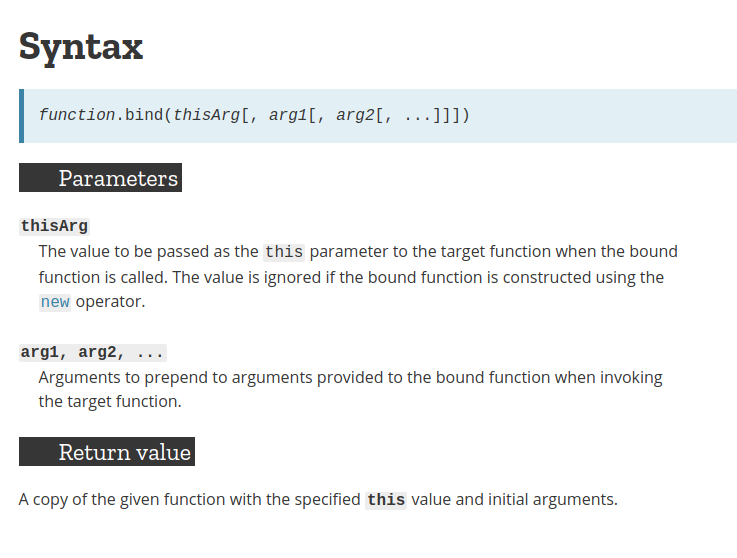

<!DOCTYPE html>


  


<html class="theme-next mist use-motion" lang="">
<head>
  <meta charset="UTF-8"/>
<meta http-equiv="X-UA-Compatible" content="IE=edge" />
<meta name="viewport" content="width=device-width, initial-scale=1, maximum-scale=1"/>
<meta name="theme-color" content="#222">


<meta http-equiv="Cache-Control" content="no-transform" />
<meta http-equiv="Cache-Control" content="no-siteapp" />


  
  
  <link href="/lib/fancybox/source/jquery.fancybox.css?v=2.1.5" rel="stylesheet" type="text/css" />


  
  
  
  

  
    
    
  

  

  

  

  

  
    
    
    <link href="//fonts.googleapis.com/css?family=Lato:300,300italic,400,400italic,700,700italic&subset=latin,latin-ext" rel="stylesheet" type="text/css">
  


<link href="/lib/font-awesome/css/font-awesome.min.css?v=4.6.2" rel="stylesheet" type="text/css" />

<link href="/css/main.css?v=5.1.2" rel="stylesheet" type="text/css" />


  <meta name="keywords" content="Sevens,JS,front-end" />


  <link rel="shortcut icon" type="image/x-icon" href="/favicon.ico?v=5.1.2" />


<meta name="description" content="从工作效率来说，造轮子不是一种好的方式，但是从学习层面来说，造轮子就可以了解到更多知识。  凡是我不能创造的，都是因为我不了解它。 ———— Richard Feynman  因此，为了更好的学习call(),apply()和bind()三个JS基础内置函数，这里就来模拟实现一次。 Call 函数首先来看一下call函数的例子： 12345678910function sayHello (mes">
<meta property="og:type" content="article">
<meta property="og:title" content="实现call(),apply()和bind()函数">
<meta property="og:url" content="https://superhos.github.io/2019/01/23/implement-call-apply-bind/index.html">
<meta property="og:site_name" content="Sevens Chan blog">
<meta property="og:description" content="从工作效率来说，造轮子不是一种好的方式，但是从学习层面来说，造轮子就可以了解到更多知识。  凡是我不能创造的，都是因为我不了解它。 ———— Richard Feynman  因此，为了更好的学习call(),apply()和bind()三个JS基础内置函数，这里就来模拟实现一次。 Call 函数首先来看一下call函数的例子： 12345678910function sayHello (mes">
<meta property="og:locale" content="default">
<meta property="og:image" content="https://superhos.github.io/2019/01/23/implement-call-apply-bind/1.png">
<meta property="og:updated_time" content="2019-01-23T15:42:23.024Z">
<meta name="twitter:card" content="summary">
<meta name="twitter:title" content="实现call(),apply()和bind()函数">
<meta name="twitter:description" content="从工作效率来说，造轮子不是一种好的方式，但是从学习层面来说，造轮子就可以了解到更多知识。  凡是我不能创造的，都是因为我不了解它。 ———— Richard Feynman  因此，为了更好的学习call(),apply()和bind()三个JS基础内置函数，这里就来模拟实现一次。 Call 函数首先来看一下call函数的例子： 12345678910function sayHello (mes">
<meta name="twitter:image" content="https://superhos.github.io/2019/01/23/implement-call-apply-bind/1.png">


<script type="text/javascript" id="hexo.configurations">
  var NexT = window.NexT || {};
  var CONFIG = {
    root: '/',
    scheme: 'Mist',
    sidebar: {"position":"left","display":"post","offset":12,"offset_float":12,"b2t":false,"scrollpercent":false,"onmobile":false},
    fancybox: true,
    tabs: true,
    motion: true,
    duoshuo: {
      userId: '0',
      author: 'Author'
    },
    algolia: {
      applicationID: '',
      apiKey: '',
      indexName: '',
      hits: {"per_page":10},
      labels: {"input_placeholder":"Search for Posts","hits_empty":"We didn't find any results for the search: ${query}","hits_stats":"${hits} results found in ${time} ms"}
    }
  };
</script>


  <link rel="canonical" href="https://superhos.github.io/2019/01/23/implement-call-apply-bind/"/>


<link rel="stylesheet" href="https://imsun.github.io/gitment/style/default.css">
<script src="https://www.wenjunjiang.win/js/gitment.js"></script>


  <title>实现call(),apply()和bind()函数 | Sevens Chan blog</title>
  


</head>

<body itemscope itemtype="http://schema.org/WebPage" lang="default">

  
  
    
  

  <div class="container sidebar-position-left page-post-detail ">
    <div class="headband"></div>

    <header id="header" class="header" itemscope itemtype="http://schema.org/WPHeader">
      <div class="header-inner"><div class="site-brand-wrapper">
  <div class="site-meta ">
    

    <div class="custom-logo-site-title">
      <a href="/"  class="brand" rel="start">
        <span class="logo-line-before"><i></i></span>
        <span class="site-title">Sevens Chan blog</span>
        <span class="logo-line-after"><i></i></span>
      </a>
    </div>
      
        <p class="site-subtitle">陈日天技术博客</p>
      
  </div>

  <div class="site-nav-toggle">
    <button>
      <span class="btn-bar"></span>
      <span class="btn-bar"></span>
      <span class="btn-bar"></span>
    </button>
  </div>
</div>

<nav class="site-nav">
  

  
    <ul id="menu" class="menu">
      
        
        <li class="menu-item menu-item-home">
          <a href="/" rel="section">
            
              <i class="menu-item-icon fa fa-fw fa-home"></i> <br />
            
            Home
          </a>
        </li>
      
        
        <li class="menu-item menu-item-archives">
          <a href="/archives/" rel="section">
            
              <i class="menu-item-icon fa fa-fw fa-archive"></i> <br />
            
            Archives
          </a>
        </li>
      
        
        <li class="menu-item menu-item-tags">
          <a href="/tags/" rel="section">
            
              <i class="menu-item-icon fa fa-fw fa-tags"></i> <br />
            
            Tags
          </a>
        </li>
      

      
    </ul>
  

  
</nav>


 </div>
    </header>

    <main id="main" class="main">
      <div class="main-inner">
        <div class="content-wrap">
          <div id="content" class="content">
            

  <div id="posts" class="posts-expand">
    

  

  
  
  

  <article class="post post-type-normal" itemscope itemtype="http://schema.org/Article">
  
  
  
  <div class="post-block">
    <link itemprop="mainEntityOfPage" href="https://superhos.github.io/2019/01/23/implement-call-apply-bind/">

    <span hidden itemprop="author" itemscope itemtype="http://schema.org/Person">
      <meta itemprop="name" content="SevensChan">
      <meta itemprop="description" content="">
      <meta itemprop="image" content="/images/avatar.gif">
    </span>

    <span hidden itemprop="publisher" itemscope itemtype="http://schema.org/Organization">
      <meta itemprop="name" content="Sevens Chan blog">
    </span>

    
      <header class="post-header">

        
        
          <h1 class="post-title" itemprop="name headline">实现call(),apply()和bind()函数</h1>
        

        <div class="post-meta">
          <span class="post-time">
            
              <span class="post-meta-item-icon">
                <i class="fa fa-calendar-o"></i>
              </span>
              
                <span class="post-meta-item-text">Posted on</span>
              
              <time title="Post created" itemprop="dateCreated datePublished" datetime="2019-01-23T21:01:39+08:00">
                2019-01-23
              </time>
            

            

            
          </span>

          

          
            
          

          
          

          

          

          

        </div>
      </header>
    

    
    
    
    
    <div class="post-body" itemprop="articleBody">

      
      

      
        <p>从工作效率来说，造轮子不是一种好的方式，但是从学习层面来说，造轮子就可以了解到更多知识。</p>
<blockquote>
<p>凡是我不能创造的，都是因为我不了解它。 ———— Richard Feynman</p>
</blockquote>
<p>因此，为了更好的学习call(),apply()和bind()三个JS基础内置函数，这里就来模拟实现一次。</p>
<h3 id="Call-函数"><a href="#Call-函数" class="headerlink" title="Call 函数"></a>Call 函数</h3><p>首先来看一下call函数的例子：</p>
<figure class="highlight javascript"><table><tr><td class="gutter"><pre><span class="line">1</span><br><span class="line">2</span><br><span class="line">3</span><br><span class="line">4</span><br><span class="line">5</span><br><span class="line">6</span><br><span class="line">7</span><br><span class="line">8</span><br><span class="line">9</span><br><span class="line">10</span><br></pre></td><td class="code"><pre><span class="line"></span><br><span class="line"><span class="function"><span class="keyword">function</span> <span class="title">sayHello</span> (<span class="params">message</span>) </span>&#123;</span><br><span class="line">    <span class="built_in">console</span>.log(message, <span class="keyword">this</span>.name)</span><br><span class="line">&#125;</span><br><span class="line"></span><br><span class="line"><span class="keyword">const</span> obj = &#123;</span><br><span class="line">    name: <span class="string">'Sevens Chan'</span></span><br><span class="line">&#125;</span><br><span class="line"></span><br><span class="line">sayHello.call(obj,<span class="string">'Hello'</span>)</span><br></pre></td></tr></table></figure>
<p>运行结果是：Hello Sevens Chan</p>
<p>通过上面的例子，我们可以分析call函数具有以下特征：</p>
<ol>
<li>原型函数的调用会改变它<code>this</code>的指向。例如：上面例子中的函数调用变成了<code>obj.sayHello</code></li>
<li>无论我们传递任何参数给<code>sayHello.call</code>，都会以<code>arg1,arg2,...</code>的形式传递到原始的<code>sayHello</code>函数中去</li>
<li>实现的<code>call</code>函数不会污染目标函数或者传入上下文本身。</li>
</ol>
<p>了解了基本概念，我们就可以一步一步来实现。先来实现第一个特征。</p>
<figure class="highlight javascript"><table><tr><td class="gutter"><pre><span class="line">1</span><br><span class="line">2</span><br><span class="line">3</span><br><span class="line">4</span><br><span class="line">5</span><br><span class="line">6</span><br><span class="line">7</span><br><span class="line">8</span><br></pre></td><td class="code"><pre><span class="line"><span class="built_in">Function</span>.prototype.myCall = <span class="function"><span class="keyword">function</span> (<span class="params">context</span>) </span>&#123;</span><br><span class="line">    context = context || <span class="built_in">window</span></span><br><span class="line">    context.func = <span class="keyword">this</span></span><br><span class="line">    <span class="keyword">return</span> context.func()</span><br><span class="line">&#125;</span><br><span class="line"></span><br><span class="line"><span class="comment">// 继续上面得例子</span></span><br><span class="line">sayHello.myCall(obj, <span class="string">'Hello'</span>) <span class="comment">// Hello Sevens</span></span><br></pre></td></tr></table></figure>
<p>要谨记一个法则<strong>谁调用函数，this就指向谁</strong>, 因此可以看到，我们用了传入的对象用作了当前函数的执行上下文，然后通过这个context来调用目标的函数。</p>
<p>接下来来实现第二条规则，参数传入：</p>
<figure class="highlight javascript"><table><tr><td class="gutter"><pre><span class="line">1</span><br><span class="line">2</span><br><span class="line">3</span><br><span class="line">4</span><br><span class="line">5</span><br><span class="line">6</span><br></pre></td><td class="code"><pre><span class="line"><span class="built_in">Function</span>.prototype.myCall = <span class="function"><span class="keyword">function</span> (<span class="params"></span>) </span>&#123;</span><br><span class="line">    <span class="keyword">let</span> [context, ...args] = <span class="built_in">arguments</span></span><br><span class="line">    context = context || <span class="built_in">window</span> || global</span><br><span class="line">    context.func = <span class="keyword">this</span></span><br><span class="line">    <span class="keyword">return</span> context.func(...args)</span><br><span class="line">&#125;</span><br></pre></td></tr></table></figure>
<p>我们在网上看到很多依然使用<code>eval</code>的形式的实现(当然，也有为了只使用ES3函数的前提约束的因素)，而如果使用ES6的话，可以使用解构赋值，就可以很方便的把数组转换成多个参数的形式。</p>
<p>下面来测试下：<br><figure class="highlight javascript"><table><tr><td class="gutter"><pre><span class="line">1</span><br><span class="line">2</span><br><span class="line">3</span><br><span class="line">4</span><br><span class="line">5</span><br><span class="line">6</span><br><span class="line">7</span><br><span class="line">8</span><br><span class="line">9</span><br><span class="line">10</span><br></pre></td><td class="code"><pre><span class="line"><span class="function"><span class="keyword">function</span> <span class="title">sayHello</span>(<span class="params">boyName, girlName</span>) </span>&#123;</span><br><span class="line">    <span class="built_in">console</span>.log(<span class="keyword">this</span>.message, boyName, girlName)</span><br><span class="line">&#125;</span><br><span class="line"></span><br><span class="line"><span class="keyword">const</span> obj = &#123;</span><br><span class="line">    message: <span class="string">'Come on!'</span></span><br><span class="line">&#125;</span><br><span class="line"></span><br><span class="line">sayHello.myCall(obj, <span class="string">'Sevens'</span>, <span class="string">'Pig'</span>)</span><br><span class="line"><span class="comment">// Come on! Sevens Pig</span></span><br></pre></td></tr></table></figure></p>
<p>结果正确。<br>然后考虑一下第三点，如果传入的上下文本身就带有<code>func</code>属性的话，那么这个属性值就会被我们覆盖掉了，就满足不了第三点的要求，所以做以下的改造：</p>
<figure class="highlight javascript"><table><tr><td class="gutter"><pre><span class="line">1</span><br><span class="line">2</span><br><span class="line">3</span><br><span class="line">4</span><br><span class="line">5</span><br><span class="line">6</span><br><span class="line">7</span><br></pre></td><td class="code"><pre><span class="line"><span class="built_in">Function</span>.prototype.myCall = <span class="function"><span class="keyword">function</span> (<span class="params"></span>) </span>&#123;</span><br><span class="line">    <span class="keyword">let</span> [context, ...args] = <span class="built_in">arguments</span></span><br><span class="line">    context = context || <span class="built_in">window</span> || global</span><br><span class="line">    <span class="keyword">const</span> func = <span class="built_in">Symbol</span>()</span><br><span class="line">    context[func] = <span class="keyword">this</span></span><br><span class="line">    <span class="keyword">return</span> context[func](...args)</span><br><span class="line">&#125;</span><br></pre></td></tr></table></figure>
<p>使用独一无二的Symbol值来做属性key，就可以保证不覆盖掉传入上下文的任何属性，达到第三点的目的。<br>这样一个Call函数就完成了。</p>
<h3 id="apply-函数"><a href="#apply-函数" class="headerlink" title="apply 函数"></a>apply 函数</h3><p>apply和call的主要区别在于传入参数的方式不同，因此可以稍微改一下：<br><figure class="highlight javascript"><table><tr><td class="gutter"><pre><span class="line">1</span><br><span class="line">2</span><br><span class="line">3</span><br><span class="line">4</span><br><span class="line">5</span><br><span class="line">6</span><br><span class="line">7</span><br></pre></td><td class="code"><pre><span class="line"><span class="built_in">Function</span>.prototype.myApply = <span class="function"><span class="keyword">function</span> (<span class="params"></span>) </span>&#123;</span><br><span class="line">    <span class="keyword">let</span> [context, args] = <span class="built_in">arguments</span></span><br><span class="line">    context = context || <span class="built_in">window</span> || global</span><br><span class="line">    <span class="keyword">const</span> func = <span class="built_in">Symbol</span>()</span><br><span class="line">    context[func] = <span class="keyword">this</span></span><br><span class="line">    <span class="keyword">return</span> context[func](...args)</span><br><span class="line">&#125;</span><br></pre></td></tr></table></figure></p>
<p>同样的结果正确</p>
<h3 id="bind-函数"><a href="#bind-函数" class="headerlink" title="bind 函数"></a>bind 函数</h3><p>bind函数主要作用在于更改<code>this</code>的指向，看下MDN上对其的描述：<br></p>
<p>可以看到 <code>bind</code> 的返回值是一个绑定了<code>this</code>指向的上下文的函数，并且包含了调用<code>bind</code>时候传入的参数。</p>
<ol>
<li><code>bind</code>函数创建并且返回一个<code>new function</code>，叫做绑定函数。 这个绑定函数包装了原始的函数对象。</li>
</ol>
<figure class="highlight javascript"><table><tr><td class="gutter"><pre><span class="line">1</span><br><span class="line">2</span><br><span class="line">3</span><br><span class="line">4</span><br><span class="line">5</span><br><span class="line">6</span><br></pre></td><td class="code"><pre><span class="line"><span class="built_in">Function</span>.prototype.myBind = <span class="function"><span class="keyword">function</span>(<span class="params">context</span>) </span>&#123;</span><br><span class="line">    <span class="keyword">const</span> boundRealFunction = <span class="keyword">this</span></span><br><span class="line">    <span class="keyword">return</span> <span class="function"><span class="keyword">function</span> <span class="title">boundFunction</span> (<span class="params"></span>) </span>&#123;</span><br><span class="line">        <span class="keyword">return</span> boundRealFunction.apply(context)</span><br><span class="line">    &#125;</span><br><span class="line">&#125;</span><br></pre></td></tr></table></figure>
<p>这里的<code>apply</code>可以使用我们上面实现的函数，这里就不重新实现了。</p>
<p>然后就是参数：<br><figure class="highlight javascript"><table><tr><td class="gutter"><pre><span class="line">1</span><br><span class="line">2</span><br><span class="line">3</span><br><span class="line">4</span><br><span class="line">5</span><br><span class="line">6</span><br><span class="line">7</span><br><span class="line">8</span><br></pre></td><td class="code"><pre><span class="line"><span class="built_in">Function</span>.prototype.myBind = <span class="function"><span class="keyword">function</span>(<span class="params"></span>) </span>&#123;</span><br><span class="line">    <span class="keyword">const</span> [context, ...args] = <span class="built_in">arguments</span></span><br><span class="line">    <span class="keyword">const</span> boundRealFunction = <span class="keyword">this</span></span><br><span class="line">    <span class="keyword">return</span> <span class="function"><span class="keyword">function</span> <span class="title">boundFunction</span> (<span class="params"></span>) </span>&#123;</span><br><span class="line">        <span class="keyword">const</span> boundArgs = <span class="built_in">arguments</span></span><br><span class="line">        <span class="keyword">return</span> boundRealFunction.apply(context, [...args, ...boundArgs])</span><br><span class="line">    &#125;</span><br><span class="line">&#125;</span><br></pre></td></tr></table></figure></p>
<p>要留意的是当返回了绑定函数之后，同样有可能在调用的时候传入参数，按照规范，这里的参数将会合并在一起。</p>
<p>最后有一个特性需要实现：如果绑定函数通过<code>new</code>操作符来构造的话，那么<code>bind</code>除第一个（context）以外的参数值将会被忽略。</p>
<p>因此我们需要分辨出绑定函数是被<code>new</code>来调用还是函数调用的方式调用。<br>回顾前面写的一篇文章 <a href="https://blog.chenhaotaishuaile.com/2019/01/15/what-new-does/" target="_blank" rel="noopener">new的时候实际做了什么</a> 可以得知通过<code>new</code>创建的对象是会把新建对象的<code>__proto__</code>指向绑定函数的原型对象，而在我们的<code>myBind</code>实现中，它的原型对象应该就是一个<code>function</code>的原型对象。</p>
<figure class="highlight javascript"><table><tr><td class="gutter"><pre><span class="line">1</span><br><span class="line">2</span><br><span class="line">3</span><br><span class="line">4</span><br><span class="line">5</span><br><span class="line">6</span><br><span class="line">7</span><br><span class="line">8</span><br><span class="line">9</span><br><span class="line">10</span><br><span class="line">11</span><br><span class="line">12</span><br><span class="line">13</span><br><span class="line">14</span><br><span class="line">15</span><br><span class="line">16</span><br><span class="line">17</span><br><span class="line">18</span><br><span class="line">19</span><br><span class="line">20</span><br><span class="line">21</span><br><span class="line">22</span><br><span class="line">23</span><br></pre></td><td class="code"><pre><span class="line"><span class="built_in">Function</span>.prototype.myBind = <span class="function"><span class="keyword">function</span>(<span class="params"></span>) </span>&#123;</span><br><span class="line">    <span class="keyword">const</span> [context, ...args] = <span class="built_in">arguments</span></span><br><span class="line">    <span class="keyword">const</span> boundRealFunction = <span class="keyword">this</span></span><br><span class="line">    <span class="keyword">const</span> funcProto = <span class="function"><span class="keyword">function</span> (<span class="params"></span>) </span>&#123;&#125;</span><br><span class="line">    <span class="keyword">const</span> boundFunction = <span class="function"><span class="keyword">function</span> (<span class="params"></span>) </span>&#123;</span><br><span class="line">        <span class="keyword">const</span> boundArgs = <span class="built_in">arguments</span></span><br><span class="line">        <span class="keyword">return</span> boundRealFunction.apply(</span><br><span class="line">            <span class="keyword">this</span> <span class="keyword">instanceof</span> funcProto</span><br><span class="line">            ? <span class="keyword">this</span> <span class="comment">// 如果为true，那么可以判断当前的绑定函数已经加入到了原型链，则不传入参数</span></span><br><span class="line">            : context,</span><br><span class="line">            [...args, ...boundArgs]</span><br><span class="line">        )</span><br><span class="line">    &#125;</span><br><span class="line">    </span><br><span class="line">    <span class="comment">// 把绑定函数原型的原型对象也指向被调用函数的原型</span></span><br><span class="line">    <span class="keyword">if</span> (<span class="keyword">this</span>.prototype) &#123;</span><br><span class="line">        funcProto.prototype = <span class="keyword">this</span>.prototype</span><br><span class="line">    &#125;</span><br><span class="line">    <span class="comment">// 绑定函数也加入到原型链中</span></span><br><span class="line">    boundFunction.prototype = <span class="keyword">new</span> funcProto()</span><br><span class="line"></span><br><span class="line">    <span class="keyword">return</span> boundFunction</span><br><span class="line">&#125;</span><br></pre></td></tr></table></figure>
<p>最后一个特性比较难理解，需要一点时间消化。</p>

      
    </div>
    
    
    
    

    

    

    

    <footer class="post-footer">
      

      
      
      

      
        <div class="post-nav">
          <div class="post-nav-next post-nav-item">
            
              <a href="/2019/01/23/baberrage-rebuild-4/" rel="next" title="【Vue-baberrage弹幕插件重制(4)】泳道Track与弹幕">
                <i class="fa fa-chevron-left"></i> 【Vue-baberrage弹幕插件重制(4)】泳道Track与弹幕
              </a>
            
          </div>

          <span class="post-nav-divider"></span>

          <div class="post-nav-prev post-nav-item">
            
              <a href="/2019/01/24/understand-event-loop/" rel="prev" title="理解JS并发模型 - Event Loop, Micro Task, Macro Task">
                理解JS并发模型 - Event Loop, Micro Task, Macro Task <i class="fa fa-chevron-right"></i>
              </a>
            
          </div>
        </div>
      

      
      
    </footer>
  </div>
  
  
  
  </article>


    <div class="post-spread">
      
    </div>
  </div>


          </div>
          


          
  <div class="comments" id="comments">
    <div id="gitment-comments"></div> 
  </div>


    


<script>
const gitment = new Gitment({
    id: "实现call(),apply()和bind()函数",
    owner: 'superhos',
    repo: 'superhos.github.io',
    oauth: {
        client_id: "955a1a460b0c407643cf",
        client_secret: "2a328b1118b9fdd8a9b773214b8324b94cf3cb1a"
    }
});
gitment.render(document.getElementById('gitment-comments'));
</script>
        </div>
        
          
  
  <div class="sidebar-toggle">
    <div class="sidebar-toggle-line-wrap">
      <span class="sidebar-toggle-line sidebar-toggle-line-first"></span>
      <span class="sidebar-toggle-line sidebar-toggle-line-middle"></span>
      <span class="sidebar-toggle-line sidebar-toggle-line-last"></span>
    </div>
  </div>

  <aside id="sidebar" class="sidebar">
    
    <div class="sidebar-inner">

      

      
        <ul class="sidebar-nav motion-element">
          <li class="sidebar-nav-toc sidebar-nav-active" data-target="post-toc-wrap" >
            Table of Contents
          </li>
          <li class="sidebar-nav-overview" data-target="site-overview">
            Overview
          </li>
        </ul>
      

      <section class="site-overview sidebar-panel">
        <div class="site-author motion-element" itemprop="author" itemscope itemtype="http://schema.org/Person">
          
          <p class="site-author-name" itemprop="name">SevensChan</p>
           
              <p class="site-description motion-element" itemprop="description"></p>
          
        </div>
        <nav class="site-state motion-element">

          
            <div class="site-state-item site-state-posts">
              <a href="/archives/">
                <span class="site-state-item-count">75</span>
                <span class="site-state-item-name">posts</span>
              </a>
            </div>
          

          

          
            
            
            <div class="site-state-item site-state-tags">
              <a href="/tags/index.html">
                <span class="site-state-item-count">7</span>
                <span class="site-state-item-name">tags</span>
              </a>
            </div>
          

        </nav>

        

        <div class="links-of-author motion-element">
          
        </div>

        
        

        
        

        


      </section>

      
      <!--noindex-->
        <section class="post-toc-wrap motion-element sidebar-panel sidebar-panel-active">
          <div class="post-toc">

            
              
            

            
              <div class="post-toc-content"><ol class="nav"><li class="nav-item nav-level-3"><a class="nav-link" href="#Call-函数"><span class="nav-number">1.</span> <span class="nav-text">Call 函数</span></a></li><li class="nav-item nav-level-3"><a class="nav-link" href="#apply-函数"><span class="nav-number">2.</span> <span class="nav-text">apply 函数</span></a></li><li class="nav-item nav-level-3"><a class="nav-link" href="#bind-函数"><span class="nav-number">3.</span> <span class="nav-text">bind 函数</span></a></li></ol></div>
            

          </div>
        </section>
      <!--/noindex-->
      

      

    </div>
  </aside>


        
      </div>
    </main>

    <footer id="footer" class="footer">
      <div class="footer-inner">
        <div class="copyright" >
  
  &copy; 
  <span itemprop="copyrightYear">2019</span>
  <span class="with-love">
    <i class="fa fa-SEVENS CHAN"></i>
  </span>
  <span class="author" itemprop="copyrightHolder">SevensChan</span>
</div>


<div class="powered-by">
  Powered by <a class="theme-link" href="https://hexo.io">Hexo</a>
</div>

<div class="theme-info">
  Theme -
  <a class="theme-link" href="https://github.com/iissnan/hexo-theme-next">
    NexT.Mist
  </a>
</div>


        

        
      </div>
    </footer>

    
      <div class="back-to-top">
        <i class="fa fa-arrow-up"></i>
        
      </div>
    

  </div>

  

<script type="text/javascript">
  if (Object.prototype.toString.call(window.Promise) !== '[object Function]') {
    window.Promise = null;
  }
</script>


  


  
  <script type="text/javascript" src="/lib/jquery/index.js?v=2.1.3"></script>

  
  <script type="text/javascript" src="/lib/fastclick/lib/fastclick.min.js?v=1.0.6"></script>

  
  <script type="text/javascript" src="/lib/jquery_lazyload/jquery.lazyload.js?v=1.9.7"></script>

  
  <script type="text/javascript" src="/lib/velocity/velocity.min.js?v=1.2.1"></script>

  
  <script type="text/javascript" src="/lib/velocity/velocity.ui.min.js?v=1.2.1"></script>

  
  <script type="text/javascript" src="/lib/fancybox/source/jquery.fancybox.pack.js?v=2.1.5"></script>


  


  <script type="text/javascript" src="/js/src/utils.js?v=5.1.2"></script>

  <script type="text/javascript" src="/js/src/motion.js?v=5.1.2"></script>


  
  

  
  <script type="text/javascript" src="/js/src/scrollspy.js?v=5.1.2"></script>
<script type="text/javascript" src="/js/src/post-details.js?v=5.1.2"></script>


  


  <script type="text/javascript" src="/js/src/bootstrap.js?v=5.1.2"></script>


  


  


  


  


  

  

  

  

  

  

</body>
</html>
